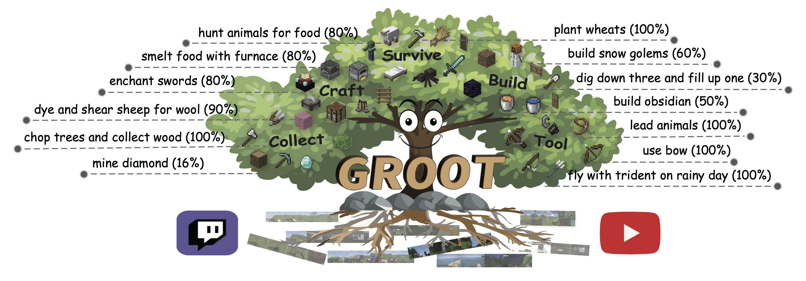
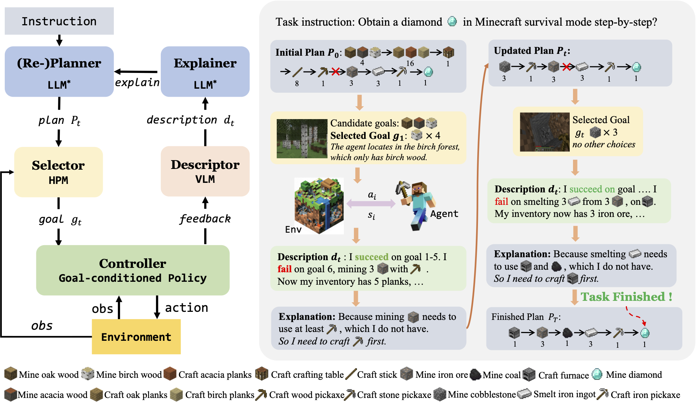
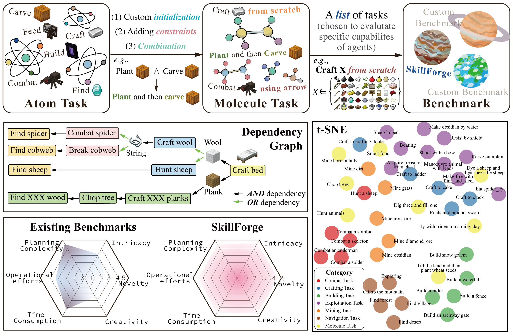
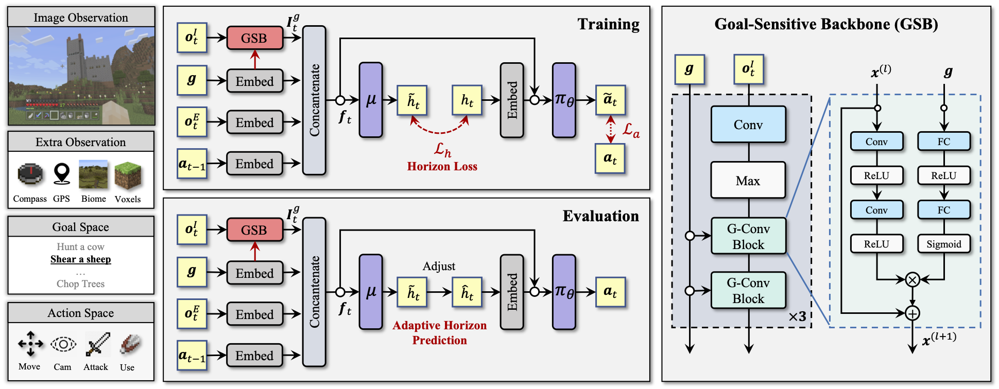

JARVIS-1: Open-world Multi-task Agents with Memory-Augmented Multimodal Language Models
Abstract
Achieving human-like planning and control with multimodal observations in an open world is a key milestone for more functional generalist agents. Existing approaches can handle certain long-horizon tasks in an open world. However, they still struggle when the number of open-world tasks could potentially be infinite and lack the capability to progressively enhance task completion as game time progresses. We introduce JARVIS-1, an open-world agent that can perceive multimodal input (visual observations and human instructions), generate sophisticated plans, and perform embodied control, all within the popular yet challenging open-world Minecraft universe. Specifically, we develop JARVIS-1 on top of pre-trained multimodal language models, which map visual observations and textual instructions to plans. The plans will be ultimately dispatched to the goal-conditioned controllers. We outfit JARVIS-1 with a multimodal memory, which facilitates planning using both pre-trained knowledge and its actual game survival experiences. JARVIS-1 is the existing most general agent in Minecraft, capable of completing over 200 different tasks using control and observation space similar to humans. These tasks range from short-horizon tasks, e.g., "chopping trees" to long-horizon tasks, e.g., "obtaining a diamond pickaxe". JARVIS-1 performs exceptionally well in short-horizon tasks, achieving nearly perfect performance. In the classic long-term task of ObtainDiamondPickaxe, JARVIS-1 surpasses the reliability of current state-of-the-art agents by 5 times and can successfully complete longer-horizon and more challenging tasks.
Self-Improving JARVIS-1
JARVIS-1 is able to self-improve following a life-long learning paradigm thanks to growing multimodal memory, sparking a more general intelligence and improved autonomy. Next, we will demonstrate the performance of JARVIS-1 at different learning stages when completing the same task. (One Epoch represents that all tasks in the task-pool have been executed by JARVIS-1 in the environment once, regardless of success or failure.)
Given an Minecraft:iron_axe, smelt and craft a Minecraft:shears with empty inventory.
Epoch 1:
1) mine 3 logs
2) craft 12 planks
3) craft 1 crafting_table
4) craft 4 stick
5) craft 1 wooden_pickaxe
6) mine 3 cobblestone
7) craft 1 stone_pickaxe
8) mine 2 iron_ore
9) smelt 2 iron_ingot
(Lack of furnace as tool)
10) craft 1 shears
Epoch 2:
1) Mine 3 logs
2) Craft 12 planks
3) Craft 1 crafting_table
4) Craft 4 sticks
5) Craft 1 wooden_pickaxe
6) Mine 8 cobblestone
7) Craft 1 furnace
8) Mine 3 cobblestone
9) Craft 1 stone_pickaxe
10) Mine 2 iron_ore
11) Smelt 2 iron_ingot
12) Craft 1 shears
(Lack of fuel sometimes)
Epoch 3:
1) mine 4 logs (One more as fuel)
2) craft 12 planks
3) craft 1 crafting_table
4) craft 4 stick
5) craft 1 wooden_pickaxe
6) mine 11 cobblestone
7) craft 1 furnace
8) craft 1 stone_pickaxe
9) mine 2 iron_ore
10) smelt 2 iron_ingot
11) craft 1 shears
(More accurate and efficient!)
1.5x Speed
Intruction-Following in Diverse Biomes
JARVIS-1 can execute human instructions in diverse environments. We illustrate executions in different biomes below.
Pick up a Minecraft:wooden_pickaxe
Execution in Plains:
Execution in Birch Forest:
Execution in Jungle:
Execution in Savanna:
Wood Group
Pick up a minecraft:chest
Generated Language Plan (Click to view relevant part of executation!):
Language Plan Executation(1.5x Speed):
Pick up a minecraft:acacia_trapdoor
Generated Language Plan (Click to view relevant part of executation!):
Language Plan Executation(1.5x Speed):
Stone Group
Craft a minecraft:stone_hoe
Generated Language Plan (Click to view relevant part of executation!):
Language Plan Executation(1.5x Speed):
Iron Group
Smelt iron and craft a minecraft:minecart
Generated Language Plan (Click to view relevant part of executation!):
Language Plan Executation(1.5x Speed):
Gold Group
Smelt gold and craft a minecraft:golden_pickaxe
Generated Language Plan (Click to view relevant part of executation!):
Language Plan Executation(1.5x Speed):
Diamond Group
Dig down to mine diamond and craft minecraft:diamond_pickaxe
Generated Language Plan (Click to view relevant part of executation!):
Language Plan Executation(1.5x Speed):
Redstone Group
Mine redstone and make minecraft:compass
Generated Language Plan (Click to view relevant part of executation!):
Language Plan Executation(1.5x Speed):
Armor Group
Craft minecraft:diamond_chestplate and equip it.
Generated Language Plan (Click to view relevant part of executation!):
Language Plan Executation(1.5x Speed):
Decoration Group
Obtain the Minecraft:painting
Generated Language Plan (Click to view relevant part of executation!):
Language Plan Executation(1.5x Speed):
Food Group
Kill chicken to obtain chicken and cook it.
Generated Language Plan (Click to view relevant part of executation!):
Language Plan Executation(1.5x Speed):
Related Projects
Check out some of our related projects below!
|  |
This work proposes to follow reference videos as instructions, which offer expressive goal specifications while eliminating the need for expensive text-gameplay annotations, and implements the agent GROOT in a simple yet effective encoder-decoder architecture based on causal transformers. |
|  |
DEPS is an interactive planning approach based on Large Language Models (LLMs) for open-ended multi-task agents. It helps with better error correction from the feedback during the long-haul planning, while also bringing the sense of proximity via goal Selector, a learnable module that ranks parallel sub-goals based on the estimated steps of completion and improves the original plan accordingly. |
|  |
MCU is an open-ended Minecraft agent evaluation framework that can generate infinite tasks and reveal the difficulty of tasks. In MCU, "task" is a structured data object. MCU leverages "atom tasks" as building blocks to compose complex tasks. Each task is measured with six distinct difficulty scores, which offer a multi-dimensional assessment of a task from different angles. We also maintain a unified benchmark, namely SkillForge, which comprises representative tasks under MCU framework. Researchers can filter specific tasks with certain properties or attributes from SkillForge to test their agent. |
|  |
This paper studies the problem of learning goal-conditioned policies in Minecraft. It first identify two main challenges of learning such policies and then propose to combine a goal-sensitive backbone and an adaptive horizon prediction module to tackle these challenges. |
BibTex
@article{wang2023jarvis1,
title = {JARVIS-1: Open-World Multi-task Agents with Memory-Augmented Multimodal Language Models},
author = {Zihao Wang and Shaofei Cai and Anji Liu and Yonggang Jin and Jinbing Hou and Bowei Zhang and Haowei Lin and Zhaofeng He and Zilong Zheng and Yaodong Yang and Xiaojian Ma and Yitao Liang},
year = {2023},
journal = {arXiv preprint arXiv: 2311.05997}
}